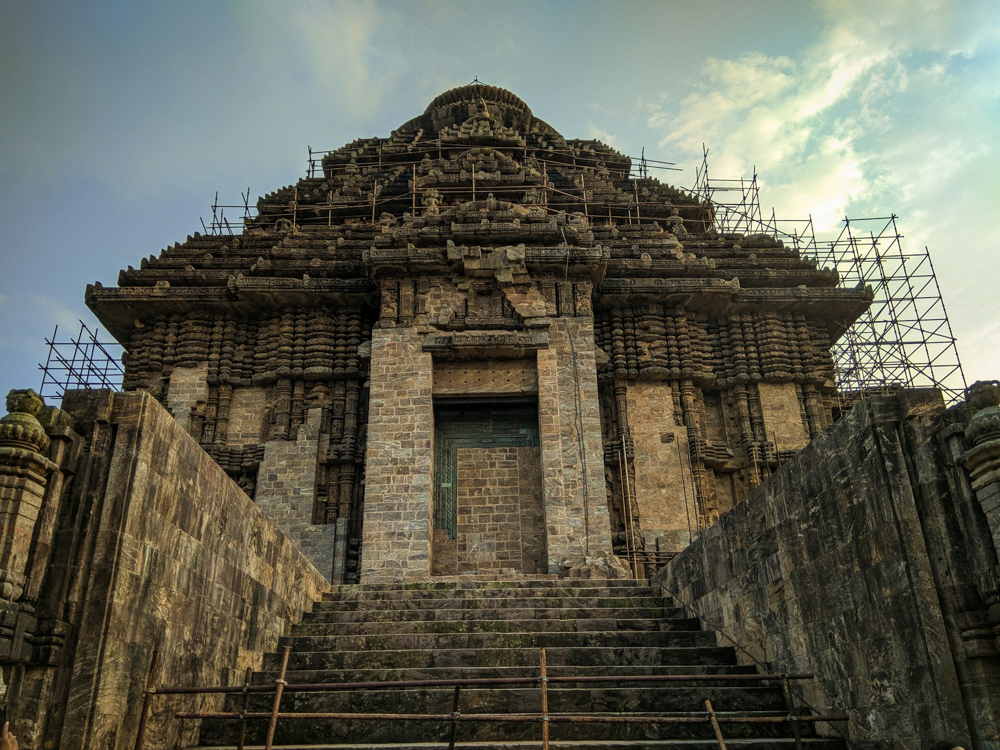
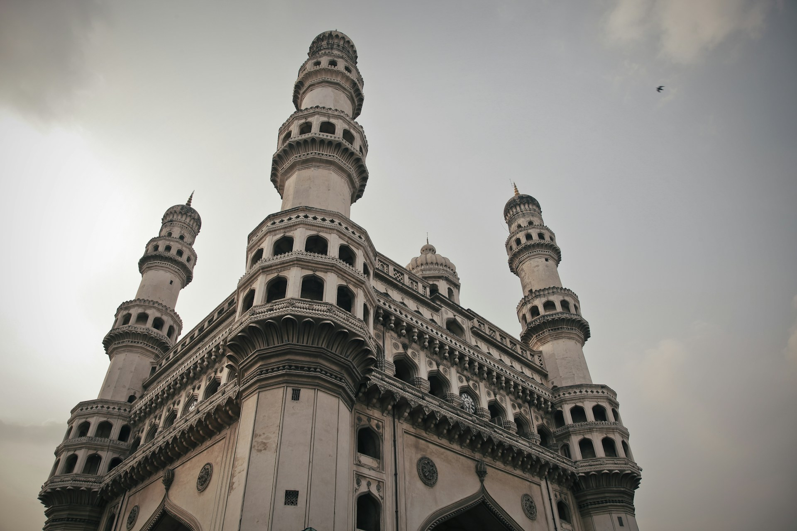
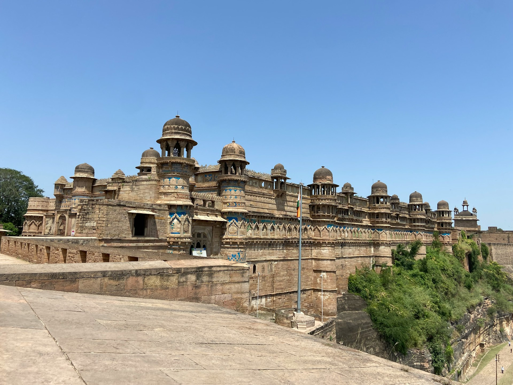

The group of temples of Khajuraho testifies to the culmination of northern Indian temple
art
and
architecture of the Chandella dynasty who ruled the region in the 10th and 11th
centuries
CE.
Distributed over an area of 6 square km in a picturesque landscape, the 23 temples
(including one partly
excavated structure) that form the western, eastern, and southern clusters of the
Khajuraho
Group of
Monuments are rare surviving examples that display the originality and high quality of
Nagara-style
temple architecture.
The Khajuraho Group of Monuments demonstrates in layout and physical form, the pinnacle
of
temple
architectural development in northern India. Built in sandstone, each temple is elevated
from its
environs by a highly ornate terraced platform, or jagati, on which stands the body, or
jangha, whose
sanctum is topped by a tower, or shikhara, of a type unique to Nagara, where the
verticality
of the
principal spire atop the sanctum is accentuated by a series of miniature spires flanking
it,
each
symbolizing Mount Kailasa, the abode of the Gods.
The plan of the temples shows the spatial hierarchy of axially aligned interconnected
spaces. The
temples are entered through an ornate entrance porch (ardhamandapa), which leads to the
main
hall
(mandapa), through which one accesses the vestibule (antarala) before reaching the
sanctum
(garbhagriha). The main halls of the temples were often accompanied by lateral transepts
with projecting
windows as well as a circumambulatory path around the sanctum. Larger temples had an
additional pair of
transepts and were accompanied by subsidiary shrines on the four corners of its jagati.
The temples of Khajuraho are known for the harmonious integration of sculptures with
their
architecture.
All surfaces are profusely carved with anthropomorphic and non-anthropomorphic motifs
depicting sacred
and secular themes. Sculptures depicting acts of worship, clan and minor deities, and
couples in union,
all reflect the sacred belief system. Other themes mirror social life through depictions
of
domestic
scenes, teachers and disciples, dancers and musicians, and amorous couples. The
composition
and finesse
achieved by the master craftsmen give the stone surfaces of the Khajuraho temples a rare
vibrancy and
sensitivity to the warmth of human emotions.
Criterion (i): The complex of Khajuraho represents a unique artistic creation, as much
for
its highly
original architecture as for the high-quality sculpted décor made up of a mythological
repertory of
numerous scenes of amusements that includes scenes susceptible to various
interpretations,
sacred or
profane.
Criterion (iii): The temples of Khajuraho bear an exceptional testimony to the Chandella
culture, which
flourished in central India before the establishment of the Delhi Sultanate at the
beginning
of the 13th
century CE.
Integrity
Khajuraho Group of Monuments includes all the elements necessary to express its
Outstanding
Universal
Value, including 23 temples that together demonstrate the originality and high quality
attained in
northern Indian Nagara-style temple architecture. The property is of adequate size to
ensure
the
complete representation of the features and processes that convey the property’s
significance, and does
not suffer from adverse effects of development and/or neglect.
To safeguard the temples within their landscape setting, the western, eastern, and
southern
clusters are
each fenced, thus delineating the protected limits. This curbs the spill-over of
settlements
that once
comprised a part of the Chandella Empire. Identified potential threats to the integrity
of
the property
include the nearby Khajuraho Airport, in the form of possible vibrations, increased
volume
of dust
particles, etc.
Authenticity
The property is fully authentic in terms of its location and setting, forms and designs,
and
materials
and substance. Its historic location has not changed. The forms, designs, and materials
authentically
illustrate the elements of the mature form of northern Indian temple architecture,
including
a
combination of saptaratha plan topped by a form of shikhara unique to the Nagara style.
Set
in a
picturesque landscape, these temples show the celebration of Chandella culture and
power.
Protection and management requirements
Khajuraho Group of Monuments is owned by the Government of India and managed by the
Archaeological
Survey of India through the Ancient Monuments and Archaeological Sites and Remains
(AMASR)
Act (1958)
and its Rules (1959), amendment (1992), and Amendment and Validation Act (2010). The
AMASR
Acts also
delineate prohibited and regulated areas extending 100 m and 200 m respectively from the
designated
monument. The land abutting the monuments is managed jointly by the Revenue official
(i.e.,
District
Collector, State government of Madhya Pradesh) and the Archaeological Survey of India,
with
the latter
responsible for final approvals. In addition to the aforementioned protective
designations,
the rural
landscape is managed by the Nagar panchayat (town-level governance) through the Madhya
Pradesh Bhumi
Vikas Rules (1984), which can regulate and protect heritage sites. Clause 17 of Section
49
of the Madhya
Pradesh Panchayati Rajya Adhiniyam Act (1993) includes a provision for the preservation
and
maintenance
of monuments. The Archaeological Survey of India reviews and strategizes the allocation
of
resources in
consonance with the identified needs. Issues such as interventions, training, research,
and
outreach are
determined annually on the basis of site inspections and assessments. These actions form
an
integral
part of the operational management mechanism, augmented with experts as needed.
Sustaining the Outstanding Universal Value of the property over time will require
continuing
to protect
and control the area immediately surrounding the property and monitoring the situation
at
the nearby
airport to identify and eliminate any negative impacts on the value, integrity or
authenticity
of the property.
SUN TEMPLE

The Sun Temple at Konârak, located on the eastern shores of the Indian
subcontinent, is
one of the outstanding examples of temple architecture and art as revealed in its
conception, scale and proportion, and in the sublime narrative strength of its
sculptural embellishment. It is an outstanding testimony to the 13th-century kingdom of
Orissa and a monumental example of the personification of divinity, thus forming an
invaluable link in the history of the diffusion of the cult of Surya,the Sun God. In
this sense, it is directly and materially linked to Brahmanism and tantricbelief
systems. The Sun Temple is the culmination of Kalingan temple architecture, with all its
defining elements in complete and perfect form. A masterpiece of creative genius in both
conception and realisation, the temple represents a chariot of the Sun God, with twelve
pairs of wheels drawn by seven horses evoking its movement across the heavens. It is
embellished with sophisticated and refined iconographical depictions of contemporary
life and activities. On the north and south sides are 24 carved wheels, each about 3 m
in diameter, as well as symbolic motifs referring to the cycle of the seasons and the
months. These complete the illusionary structure of the temple-chariot. Between the
wheels, the plinth of the temple is entirely decorated with reliefs of fantastic lions,
musicians and dancers, and erotic groups. Like many Indian temples, the Sun Temple
comprises several distinct and well-organized spatial units. The vimana (principal
sanctuary) was surmounted by a high tower with a shikhara (crowning cap), which was
razed in the 19th century. To the east, the jahamogana (audience hall) dominates the
ruins with its pyramidal mass. Farther to the east, the natmandir (dance hall), today
unroofed, rises on a high platform. Various subsidiary structures are still to be found
within the enclosed area of the rectangular wall, which is punctuated by gates and
towers.The Sun Temple is an exceptional testimony, in physical form, to the 13th-century
Hindu Kingdom of Orissa, under the reign of Narasimha Deva I (AD 1238-1264). Its scale,
refinement and conception represent the strength and stability of the Ganga Empire as
well as the value systems of the historic milieu. Its aesthetical and visually
overwhelming sculptural narratives are today an invaluable window into the religious,
political, social and secular life of the people of that period. The Sun Templeis
directly associated with the idea and belief of the personification of the Sun God,
which is adumbrated in the Vedas and classical texts. The Sun is personified as a divine
being with a history, ancestry, family, wives and progeny, and as such, plays a very
prominent role in the myths and legends of creation. Furthermore, it is associated with
all the legends of its own artistic creation – the most evocative being its construction
over twelve years using 1,200 artisans – and the stories about the deep commitment of
its master builder, Bisu Moharana, to the project, in which his son (who was born during
this period) later became involved. Konârak’s location and name are important
testimonies to all the above associations, and its architectural realisation is
associated with the living traditions of Brahmanismand tantricpractices.
Criterion (i): A unique artistic achievement, the temple has raised up those lovely
legends which are affiliated everywhere with absolute works of art: its construction
caused the mobilization of 1,200 workers for 12 years. The architect, Bisu Moharana,
having left his birthplace to devote himself to his work, became the father of a son
while he was away. This son, in his turn, became part of the workshop and after having
constructed the cupola of the temple, which his father was unable to complete, immolated
himself by jumping into space.
Criterion (iii): Konârak is an outstanding testimony to the 13th-century kingdom of
Orissa.
Criterion (vi): Directly and materially linked to the Brahman beliefs, Konârak is the
invaluable link in the history of the diffusion of the cult of Surya, which originating
in Kashmir during the 8th century, finally reached the shores of Eastern India.
Integrity
The boundaries of the nominated property encompass the attributes necessary to represent
the Outstanding Universal Value of the Sun Temple, Konârak. Within the inscribed and
protected extent of the property, its surviving structures and sculptures, as well as
the dislodged remains preserved in-situ, represent its quintessential qualities of
architectural form, design and sculptural relief. Furthermore, the protected zone
includes all areas that have the potential to reveal any unexplored archaeological
remains that may possibly enhance the understanding of the property’s Outstanding
Universal Value. Identified and potential threats to the integrity of the property
include development pressure: modernisation and urban growth affecting the environment
of the monument; environmental pressure: deforestation due to cyclones and human
activities, saline breeze and sand blasting, vehicular movements, and microbiological
growth; tourism pressure: 40% increase in number of tourists; natural disasters: flood
and cyclones; and local population growth. An extension of the site boundaries and the
buffer zone around the property by land acquisition has been recommended for the better
management of the site. Concerns over the structural integrity of elements of the site
have been raised in the past, including the impact of monsoon rains and associated soil
erosion. In addition, erosion of metal cramps supporting the structure due to salt air
has in the past resulted in some damage.
Authenticity
The Sun Temple’s authenticity of form and design is maintained in full through the
surviving edifices, their placement within the complex, structures and the integral link
of sculpture to architecture. The various attributes of the Sun Temple, including its
structures, sculptures, ornamentation and narratives, are maintained in their original
forms and material. Its setting and location are maintained in their original form, near
the shore of the Bay of Bengal. In preserving the attributes as stated, the Sun Temple,
Konârak repeatedly evokes the strong spirit and feeling associated with the structure,
which is manifested today in the living cultural practices related to this property,
such as the Chandrabhanga festival.
Protection and management requirements
The Sun Temple, Konârak is protected under the National Framework of India by the
Ancient Monuments and Archaeological Sites and Remains (AMASR) Act (1958) and its Rules
(1959). Other relevant protective legislation includes the Forest Act, Konârak
Development Act and notified Council Area Act. Under the AMASR Act, a zone 100 metres
outside the property and a further zone 200 metres outside the property constitute,
respectively, prohibited and regulated zones for development or other similar activity
that may have adverse effects on the Outstanding Universal Value of the property. All
conservation programmes are undertaken by the Archaeological Survey of India through its
national, regional and local representatives. There are five management-related plans:
safety, environment, master planning, environmental development and tourism. World
Heritage funding was received to carry out an assessment of structural
stability.Sustaining the Outstanding Universal Value of the property over time will
require continuing the structural and material conservation of the main Jagamohana
structure and its sculptures; establishing a stronger functional integration of local
and central authorities; including the larger landscape setting into the regulated area
for development; and addressing the identified threats related to development pressure,
environmental pressure, tourism pressure, natural disasters, and local
population growth.
CHARMINAR

Charminar was built by Sultan Mohammed Quli Qutb Shah in 1591. It is
said that this square shaped structure with four pillars and intricate carvings was
built in honour of his wife, Bhagmati. However, the actual reason behind building
Charminar is still not clear.
As per a popular belief, Charminar was built to acknowledge the elimination of the
plague which had affected the entire city immensely during that era. It is believed that
the Sultan had prayed for the end of this plague with which his people were suffering.
Hence, as the plague ended, he built the charminar as a tribute to Allah. The four
pillars are also said to be dedicated to the first four caliphs of Islam.
It is also said that it was built in the memory of Prophet Muhammed’s son in law who
lost his life at the battle of Karbala as its design is in the shape of Shiya Tazias.
Some also believe that the location of Charminar is the place where Sultan had seen his
then future wife Bahgmati for the first time.
As per a French traveller, Jean de Thévenot who travelled in the 17th century, the
reason for its construction is entirely different. According to his narration which is
in sync with the Persian texts as well, Charminar was built to commemorate the start of
the second Islamic millennium.
The inscription on the foundation stone is translated as ‘Fill this my city with people
as, Thou hast filled the river with fishes, O Lord.’ This also indicates that the
monument was built to mark the city’s foundation as well. As per the historian Historian
Mohammed Safiullah, Charminar was built as an epicenter of Hyderabad.
The construction began in 1589 and was completed in two years with a cost of Rs. 9
lakhs, which was around 2 lakhs huns/gold coins in those times. It is said to weigh
around 14000 tonnes with a minimum of 30 feet deep foundation. In 1670, a minaret had
fallen down after being struck by lightning. It was then repaired at a cost of around
Rs.58000 then. In 1820, some part of it was renovated by Sikandar Jah at a cost of Rs. 2
lakhs.
There is another legend associated with the Charminar according to which, there is a
secret underground tunnel that connects Charminar to the Golconda Fort. It was built for
the royal family, to escape in case of any kind of emergencies. However, till date no
tunnel could be found.
Architecture of Charminar
An Iranian architect Mir Momin Astrawadi, who had settled in Hyderabad, designed
Charminar. It presents an imposing structure which has clearly withstood the test of
time. It is a square shaped monument with four pillars, one on each side. The
architectural design of Charminar is inspired from the Shia “tazias”. These Tazias were
built in the memory of Hussain, who was the son in law of Prophet Muhhamed and had lost
his life in the battle of Karbala.
The square shape of the monument measures 20 meters on each side. Each side of the
monument is 11 meter wide and overlooks the four prominent thoroughfares. Charminar has
been built with granite and lime mortar.
The four pillars around Charminar represent the four caliphs. These pillars or minars
are 48.7 meters high. These are four stories, with each floor divided by intricately
carved rings that surround it. On the top floor of Chaminar there is a mosque which is
believed to be the oldest mosque of Hyderabad city. There are 45 prayer spaces or
musallah. Attached to these is the open space which can be used to accommodate more
people on occasions like Friday prayers or festivals. It is located at the western end
of the monument’s roof. It can be reached via 149 winding steps. The view from the top
is also breathtaking.
In the middle of the Charminar courtyard, you will find a small vazu with a small
fountain, which has been built to provide water for the ablution before offering
prayers.
One can also notice the signature motifs of Qutub Shahi buildings on Charminar. The
manner with which each pillar has been built makes it appear as a lotus leaf. The arches
around the structure do lead to slightly shorter appearance when in comparison to the
minars. In the year of 1889, four clocks were also added on all the four sides
of the structure.
GWALIOR FORT

The Gwalior Fort (Gwalior ka kila) is strategically located in the
city of Gwalior in the state of Madhya Pradesh, India. Known for its impregnable
defenses, this historic fort stands tall on a hill, offering a commanding view of
Gwalior and its surroundings. With its soaring 10-meter-high walls, this fort is adorned
with stunning culptures and remarkable architecture.
History of the Gwalior fort (Gwalior Kila)
According to historians, the earliest foundation of Gwalior Fort (Gwalior Kila) may have
been laid in the 6th century AD by Suraj Sen, a Rajput warrior. A fascinating story of
Gwalior says that a saint named Gwalipa came wandering to the fort and met the king, who
was suffering from a skin disease. When Gwalipa suggested him to take a dip in the
sacred pond (now called Suraj Kund), the king was immediately cured. And in gratitude,
Suraj Sen named the city Gwalior after the sage.
After being attacked and ruled by various rulers, the Tomars captured the fort in 1398.
The most celebrated of the Tomars was Maan Singh. He was the one who constructed several
monuments inside the fort complex. The beautiful turquoise blue-tiled Man Mandir Palace
was also built during his reign.
After the Tomars, the Mughals ruled Gwalior. With the decline of the Mughals, Marathas,
specifically the Schindias ruled Gwalior until the early 19th century. The last assault
upon this great fort was led by legendary freedom fighters, the valiant queen of Jhansi
and Tantiya Tope during the battle of 1857.
Today, the fort's existing history lives on in its palaces, temples, gateways and its
walls. If you want to relive the great battles, brave dynasties and epic stories, you
must plan a visit to the exquisite masterpiece in the heart of Incredible India, Gwalior
Fort.
Monuments and Temples to explore inside the Gwalior Fort complex
Mansingh Palace (Man Mandir Palace):
Man Singh Palace in Gwalior
The most prominent structure of the Gwalior Fort, Man Mandir Palace is an unforgettable
wonder of Rajput Architecture. Built by Raja Man Singh Tomar, the palace served as the
main residence of the rulers of the Tomar dynasty for a long period. The palace's
exterior is decorated with blue and yellow tiles. Also, there are lattice screens and
mosaics with floral and geometrical patterns.
Gujari Mahal
Gujari Mahal, Gwalior
Built for Raja Man Singh's beautiful Gujjar Queen, Mrignayani, Gujari Mahal is a square
two-storeyed building which was later converted into an Archaeological Museum. The
Gujari Mahal Museum has a wide collection of antiquities, some of them dating back to
the 1st century A.D. The rarest exhibit in Gujari Mahal is the famous statue of
Shalbhajika which has been described as India's Venus de Milo.
Teli-ka-Mandir
Teli-ka-Mandir, Gwalior
This temple is a massive, 23 m high Vishnu temple, built in the 8th-9th century. As per
the legends, it was built using money donated by oil merchants. Hence, it was named Teli
Ka Mandir. Tourists can also find this information in the inscription written on the
main gate of the temple.
Sas-Bahu Temples
Sas-Bahu Temples in Gwalior
Literally meaning temples of the mother-in-law and daughter-in-law, the Sas-Bahu temples
were built around 1093. The larger Sas temple, dedicated to Lord Vishnu, has open
galleries on all sides, creating a beautiful play of light and shadow on its walls. The
smaller Bahu temple is dedicated to Lord Shiva. Some historians claim that the Sas-Bahu
temples were originally called Sahastrabahu.
Jain Tirthankaras
When entering the fort through Urwahi Gate, one must witness the fascinating rock-cut
sculptures of Jain Tirthankaras. The most impressive of these are a 17 m tall standing
statue of Adinath, the first Jain Tirthankara, distinguished by the symbol of the bull;
a 10 m seated figure of Neminath, the 22nd Tirthankara, with the symbol of a shell; and
a 19 m tall Parshwanath, distinguished by the cobra motif forming a hood
behind his head.